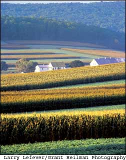

“I believe that the great Creator has put ores and oil on
this Earth to give us a breathing spell ... as we exhaust
them, we must be prepared to fall back on our farms,
which are God’s true storehouse. We can learn to
synthesize materials for every human need from things
that grow.”
- George Washington Carver (1864-1943)
|
 |
|
|